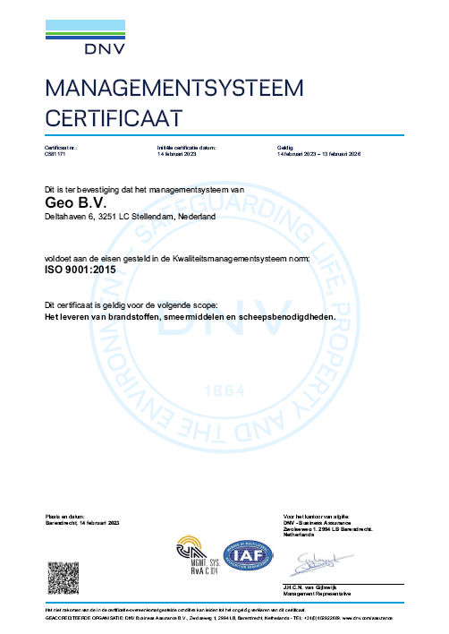
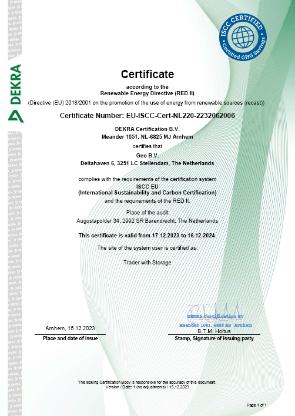

ISO 9001:2015
Gecertificeerd kwaliteitsmanagement
Het certificaat geldt voor het leveren van brandstoffen, smeermiddelen en scheepsbenodigdheden. Klanttevredenheid, klanteneisen en klantenrapportages nemen daarin een centrale plaats in.
Aantoonbaar geregeld
Geo B.V. werkt met een gecertificeerd managementsysteem en mag erkende hernieuwbare brandstoffen leveren. Hieronder ziet u de certificaten zelf, plus de documenten die u als klant nodig kunt hebben.
De certificaten zelf

ISO 9001:2015
Het certificaat geldt voor het leveren van brandstoffen, smeermiddelen en scheepsbenodigdheden. Klanttevredenheid, klanteneisen en klantenrapportages nemen daarin een centrale plaats in.

ISCC EU
Wij zijn gecertificeerd voor het leveren van erkende hernieuwbare brandstoffen volgens het ISCC EU systeem, met de administratie en controle die daarbij horen.
Missie en visie
Wij gaan lange termijn relaties aan met klanten en partners op elk niveau en van elke omvang. Dat bereiken wij door de best beschikbare brandstoffen en smeermiddelen aan te bieden, voort te bouwen op onze goede naam, en ons te onderscheiden met kwaliteit tegen een eerlijke prijs.
Ons managementsysteem wordt effectief en economisch verantwoord uitgevoerd, met de veiligheid en de gezondheid van onze medewerkers als vast uitgangspunt. Processen verbeteren wij doorlopend.
Wij richten ons op het voorkomen van lucht-, water- en bodemverontreiniging en op het beperken van geluid en andere hinder. Onze chauffeurs volgen erkende training om milieubewust met hun materieel om te gaan.
Bij Geo B.V. is geen plaats voor corruptie, omkoping, belangenverstrengeling of fraude. Wij houden ons aan de eisen uit wet- en regelgeving.
Downloads
Deze documenten staan op de bestaande website van Geo B.V. en openen in een nieuw tabblad.
Zoekt u een veiligheidsinformatieblad van een product dat er niet bij staat? Stuur een bericht, dan sturen wij het u toe.
Vragen over certificering
Wij sturen de certificaten en veiligheidsbladen graag rechtstreeks toe.